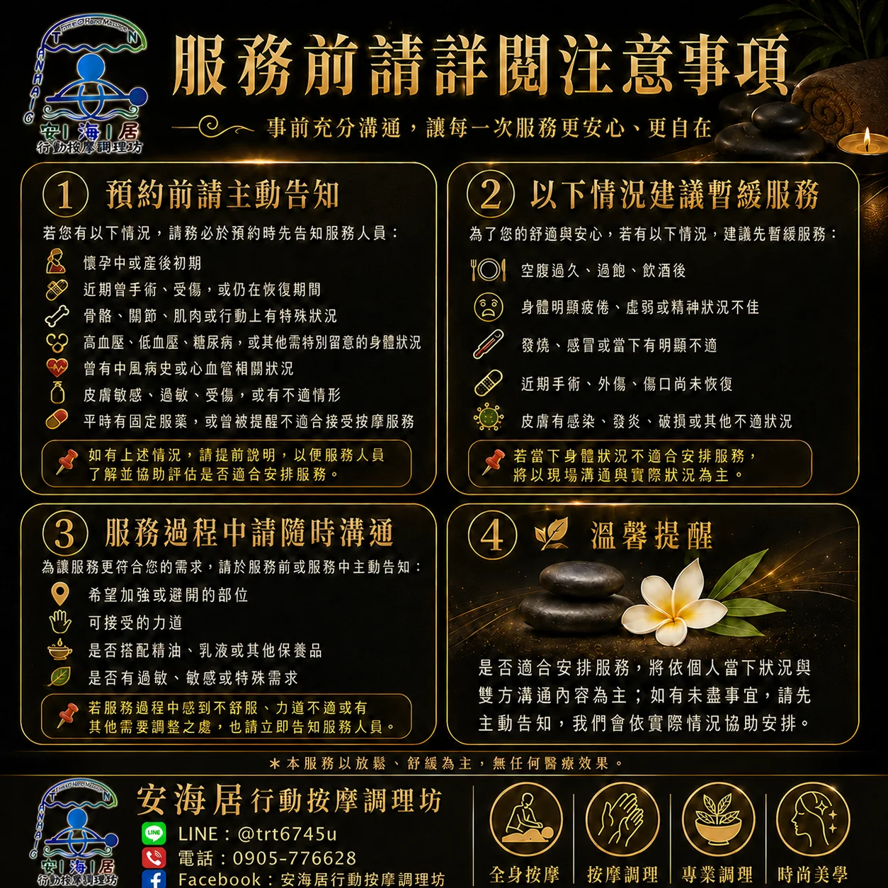

飲食與精神狀態
空腹過久、過飽、飲酒後，或身體明顯疲倦、虛弱、精神狀況不佳。
服務前說清楚，比事後補充更重要。這一頁保留你原始資料中的提醒重點，但用更自然的閱讀方式重新整理。
如有以上情況，請提前說明，讓服務人員了解並協助評估是否適合安排。

這不是拒絕服務，而是希望在身體狀況合適時再安排，讓整體感受更安全。
空腹過久、過飽、飲酒後，或身體明顯疲倦、虛弱、精神狀況不佳。
發燒、感冒、有明顯不適，或皮膚有感染、發炎、破損等狀況。
近期手術、外傷，傷口尚未恢復。是否適合安排，仍以現場溝通與實際狀況為主。
服務項目、日期、時間與時長、完整地址、人數、是否指定師傅。若有特殊身體狀況、精油過敏、希望加強或避開部位，也建議一併說明。
以台南火車站前站起算，依 Google Maps 機車導航路線估算。4 公里內原則免費，4–6 公里 NT$200–300、6–8 公里 NT$300–400、8–10 公里 NT$400–500，10 公里以上或市區外另行報價。
可以。一般時段為 10:00–21:00；21:00–23:00 與 23:00–00:00 有不同時段價格，且晚上 9 點後建議提前預約。
可以詢問指定。女客指定師傅免費；原公告載明男客指定女師傅於純按摩服務會加收指定服務費，實際金額及可否安排請以預約確認為準。
不一定。一般可依服務前準備清單準備毛巾／浴巾與合適空間；如需要趴趴墊、按摩床或其他設備，請預約時先提出，由服務人員告知可否代備與費用。
可以。新版精油公告載明自備精油服務以 NT$1,200／小時起計算，實際仍依預約時段與服務內容確認。
沒有。本服務以日常放鬆、舒緩與美學保養為主，不涉及醫療行為、疾病診斷或醫療效果。
會依成立時間與通知時間收取安排費：臨時預約 NT$500、當日預約 NT$400、提前預約 NT$300；不可抗力或特殊節日則依當期公告與雙方實際協調為準。